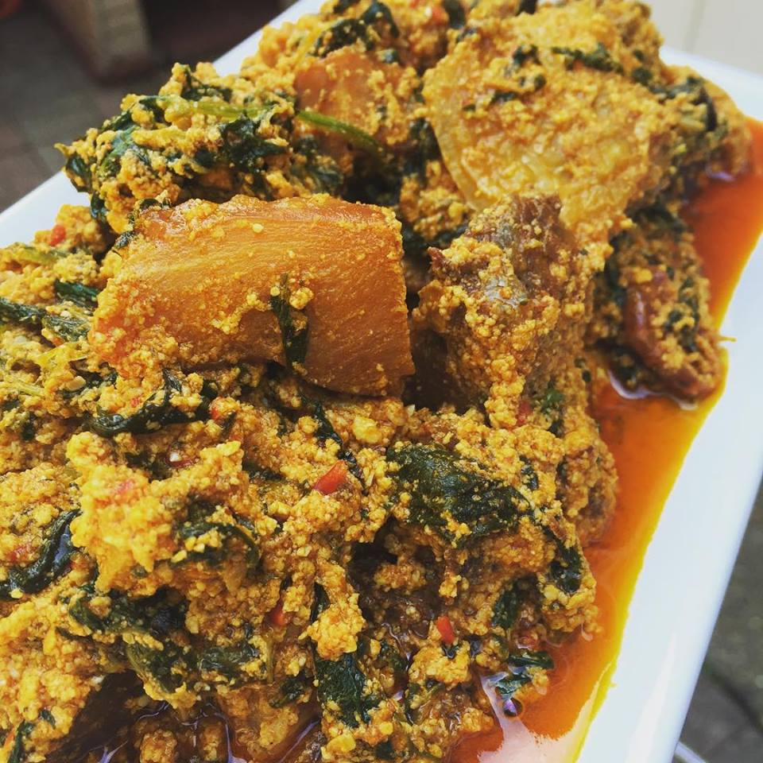

Egusi Soup

Procedure For Cooking Egusi Soup
Egusi soup is a delicious soup prepared in Nigeria, It is very popular among the different
tribes in Nigeria, and there are slightly different variations of this soup.
Ingredients
- 1 cup blended melon
- 1 tbsp. palm oil
- Uziza(found in Nigeria)
- 1 tbsp. locust beans
- 1 medium sized onion
- 2 cups of water
- 2 seasoning cubes
- 2 chopped habanero peppers
- 1 cup stock
- Ugu vegetable(found in Nigeria)
- 1 tsp. salt
- 1 tbsp. crayfish
- chicken
- 1 tsp. yellow pepper
- 4 medium sized smoked panla fish
Steps
-
Blend the melon, onion, water and fresh pepper with water until
it forms a paste.
-
Add water, chicken, turkey, yellow pepper, stock, smoked
fish, crayfish, chopped pepper and palm oil to a pot.
Allow all the ingredients to boil for 15 minutes.
-
Scoop little bits of the egusi paste into the pot and do not stir.
cook for 10 minutes.
-
Next add the Ugu leaves and Uziza, mix together and allow to cook for 5
minutes. You will notice that the oil will start to rise to the top,
your Egusi Soup is now ready.